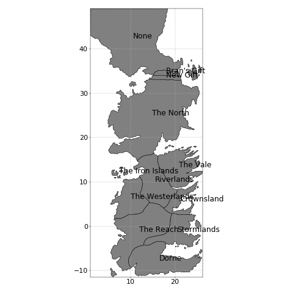
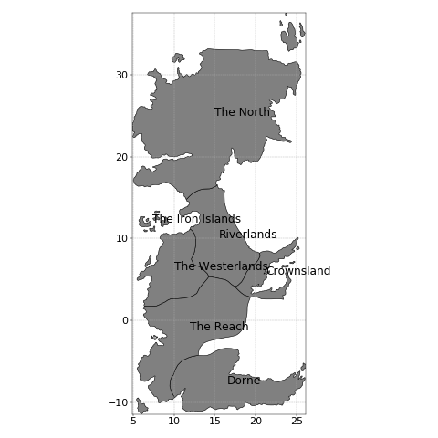
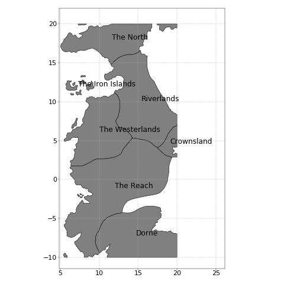
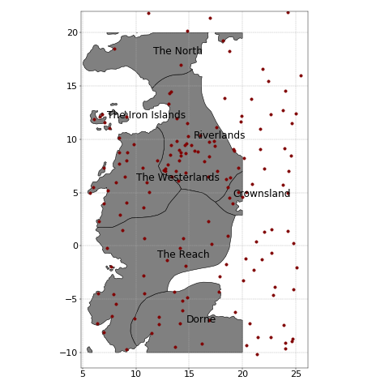
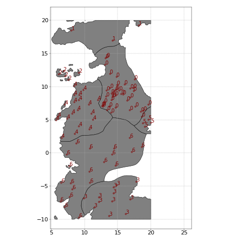

<div id="content" class="mobileUI-main-content">
  <div id="content-inner">
    <article class="is-post is-post-excerpt">

      <header>
        <h2>Working with Geometries and Geopandas</h2>
        <span class="byline">Polygons cropping and point data aggregation</span>
      </header>

      <div class="info">
        <span class="date">
          <span class="month">Apr</span><span class="day">29</span><span class="year">2019</span>
        </span>
        <ul class="stats">
          <!--
            <li><a href="#" class="link-icon24 link-icon24-1">16</a></li>
            <li><a href="#" class="link-icon24 link-icon24-2">32</a></li>
            <li><a href="#" class="link-icon24 link-icon24-3">64</a></li>
            <li><a href="#" class="link-icon24 link-icon24-4">128</a></li>
          -->
        </ul>
      </div>

      <!--
      <a href="#" class="image image-full"></a>
      -->

      <p>When working with spatial data it is common that I end up performing
      two specific tasks: cropping the polygons defined in a shapefile and aggregating
      a set of data points per polygon. I am pretty sure I am not the only doing this
      over and over. The thing is that sometimes when trying to do some spatial
      analysis it happens that we have a shapefile with more data than we need.
      For example it may have more geographic areas (eg. polygons) than the
      ones we are interested in. Another problem is when the geographic areas in
      the shapefile are not defined in the way we need. In addition,
      once we have the polygons described in the way we want,
      we realize that other data is not represented at the same unit level and
      we need to aggregate it.</p>

      <p>Here I will show how to carry on both tasks using Geopandas. As example dataset
      I will use the Game of Thrones world map used in my previous post
      <a href="http://ric70x7.github.io/20190318_got.html">Displaying Maps with Python</a>.
      Among other features, this map describes the continents, political
      borders and some relevant locations mentioned in the first book of the series.
      First of all, let's load the data of the political borders of Westeros
      and display it.</p>

<pre><code class="language-python">>>> got_political = geopandas.GeoDataFrame.from_file('Westeros_Essos_shp/GoTRelease/political.shp')
>>> got_political.drop(columns='id', inplace=True) #Not needed, but saves some unnecessary confusion later
>>> print(got_political)
                name      ClaimedBy  \
0           New Gift  Night's Watch
1         Riverlands          Tully
2               None      Wildlings
3        Bran's Gift  Night's Watch
4          The North          Stark
5   The Iron Islands        Greyjoy
6              Dorne        Martell
7         Stormlands      Baratheon
8           The Vale          Arryn
9    The Westerlands      Lannister
10        Crownsland      Targaryen
11         The Reach         Tyrell

                                             geometry
0   POLYGON ((15.0393543004259 34.06689547382619, ...
1   POLYGON ((17.46128411581053 4.107242551078642,...
2   POLYGON ((20.8060892727471 34.77240649737939, ...
3   POLYGON ((15.17952205344971 34.26780258649366,...
4   (POLYGON ((10.68420190995907 31.5231377899045,...
5   (POLYGON ((8.194051841746264 13.37612551159619...
6   (POLYGON ((10.07741584338305 -9.37693151129487...
7   (POLYGON ((17.98871743696853 -4.08209464082048...
8   (POLYGON ((19.00332878581176 18.1852933151432,...
9   (POLYGON ((11.96500825077035 11.16815688816995...
10  (POLYGON ((24.62624829467943 7.229331514324642...
11  (POLYGON ((7.605566166439305 -2.16897680763983...
</code></pre>



<pre><code class="language-python">>>> got_political = geopandas.GeoDataFrame.from_file('Westeros_Essos_shp/GoTRelease/political.shp')
>>> print(got_political)
</code></pre>

      <p>Say for example that we are only interested in areas of The North and below, with
      exception of The Vale and Stormlands. In this case it is very easy to get
      rid of the polygons we don't want. We just need to filter out the data
      or drop the rows 0, 2, 3 , 7 and 8.

<pre><code class="language-python">>>> got_political.drop(index=[2, 7, 8], inplace=True)
</code></pre>

      <p>This is our new map.</p>




      <p>That was very easy. However, sometimes we do not want to eliminate
      polygons but to crop them. For example, say that we are only interested
      in the square limited by the coordinates (5, -10), (20, -10), (20, 20)
      and (5, 20). Cropping the map is also quite simple thanks to the
      functionality of geopandas and shapely. First we will define a shapely
      polygon using the 4 points. Then we will put that polygon into a
      geopandas dataframe and call the overlay method.
<pre><code class="language-python">>>> points = [(5, -10), (20, -10), (20, 20), (5, 20)]
>>> shapely_polygon = shapely.geometry.Polygon(points)
>>> square_geoframe = geopandas.GeoDataFrame({'geometry': [shapely_polygon]}, crs=got_political.crs)
>>> square_geoframe.geometry[0]
>>> new_map = geopandas.overlay(got_political, square_geoframe, how='intersection')
</code></pre>

      <p>The new map is shown below. The overlay function allows us not only to
      find intersections, we can also find unions of polygons, in case we need
      to extend the areas in the shapefile. The <i>crs</i> argument describes
      de coordinates reference system. Spatial data can be described in
      different ways depending on the projection used. In this case to keep
      consistency with the description of got_political, we define the
      square_geoframe using the same reference system.</p>



      <p>So cropping the polygons was not that complicated, was it? Next, as we
      mentioned above, sometimes we need to aggregate data according to the
      polygons described in our map. For this example, we will use the
      shapefile of locations. This is a shapefile that does not contain
      polygons but only points.</p>

<pre><code class="language-python">>>> got_locations = geopandas.GeoDataFrame.from_file('Westeros_Essos_shp/GoTRelease/locations.shp')
>>> got_locations.drop(columns='id', inplace=True)
>>> print(got_locations.head(4)
                   name  size  confirmed    type  \
0        King's Landing     5          1    City
1        Hayford Castle     3          0  Castle
2                 Rosby     3          1  Castle
3  Old Stone Bridge Inn     1          0   Other

                                      geometry
0  POINT (19.07822970057675 3.953605833573462)
1  POINT (18.80256645296327 4.487995391976725)
2  POINT (19.98698396601437 4.621154757349338)
3  POINT (20.39814270821752 5.041658016420776)
</code></pre>

      <p>The map below shows the locations with red points. If we hadn't
      cropped our map, these locations would all be contained within the
      continent.</p>



      <p>Geopandas has a nice function that performs a spatial join of
      GeoDataFrames. In this case we need to join <i>new_map</i> with
      <i>got_locations</i>. Since we are not interested the points outside new map, we
      will perform an <i>inner</i> join. This way the points that are not
      matched will be omitted.
      The code below performs an inner join and appends the columns in
      <i>new_map</i> to the columns of <i>got_locations</i>. The overlapping
      column names are assigned the suffix <i>political_id</i>.
      To show that this is working and that all points are assigned to the right polygon
      we will display the polygon index next to the locations in figure below.</p>

<pre><code class="language-python">>>> joint_dataframe = geopandas.tools.sjoin(got_locations, new_map, how='inner', rsuffix= 'political_id')
>>> print(joint_dataframe.head(4))
         name_left  size  confirmed    type  \
0   King's Landing     5          1    City
1   Hayford Castle     3          0  Castle
2            Rosby     3          1  Castle
10      Stokeworth     3          0  Castle

                                       geometry  index_political_id  \
0   POINT (19.07822970057675 3.953605833573462)                   5
1   POINT (18.80256645296327 4.487995391976725)                   5
2   POINT (19.98698396601437 4.621154757349338)                   5
10  POINT (19.59217812833063 5.072027696242564)                   5

   name_political_id  ClaimedBy
0         Crownsland  Targaryen
1         Crownsland  Targaryen
2         Crownsland  Targaryen
10        Crownsland  Targaryen
</code></pre>



      <p>The last thing that we need now is to aggregate these points: count
      how many there are per polygon. That is straightforward with the method
      <i>value_counts</i>.

<pre><code class="language-python">>>> agg = joint_dataframe['index_political_id'].value_counts()
>>> print(agg)
0    40
6    20
4    20
3    12
2     5
5     4
1     3
Name: index_political_id, dtype: int64

>>> new_map.loc[agg.index, 'locations_count'] = agg.values # Add column counts to new_map
</code></pre>

      <p>Finally, here we have a map colored by the variable counts and the
      code to generate it.</p>

<pre><code class="language-python">>>> from matplotlib import cm, colors, colorbar
>>> from descartes import PolygonPatch

>>> cmap = cm.get_cmap('viridis') # Color palette
>>> normalize = colors.Normalize(vmin=0, vmax=new_map.locations_count.max()) # Associate values to colors

>>> fig, ax = plt.subplots(1, figsize = (12, 12))
>>> for i, gi in enumerate(new_map.geometry): # Add islands
>>>     ax.add_patch(PolygonPatch(gi, color=cmap(normalize(new_map.locations_count[i])), ec='k', lw=1))

>>> # Set the x and y limits of the figure
>>> xlims = np.array(got_political.bounds[['minx', 'maxx']]).min(), np.array(got_political.bounds[['minx', 'maxx']]).max()
>>> ylims = np.array(got_political.bounds[['miny', 'maxy']]).min(), 22.
>>> ax.set_xlim(*xlims)
>>> ax.set_ylim(*ylims)
>>> ax.set_aspect('equal')

>>> ax.grid(linestyle='--') # add grid
>>> plt.tight_layout()
>>> cax, _ = colorbar.make_axes(ax)
>>> cbar = colorbar.ColorbarBase(cax, cmap=cmap, norm=normalize)
</code></pre>


    </article>
  </div>
</div>
